The Business Logic in Workflow Management form enables you to configure business logic in Mind workflows using deep integration with Blockly.
This section describes the steps to configure a workflow using the BUSINESS LOGIC item. The BUSINESS LOGIC item receive input from the DATA OPERATIONS block.
Business Scenario Used
The XML Form has discussion control with a hierarchical workflow status such as Draft, Submitted, and Approved.
If the status of the form is Submitted, then the workflow action Approve must be validated for all the items in the discussion control of the form record.
If the status of all items in the discussion control of the form is Closed, then the workflow action must be moved to Approved.
If the status of any item in the discussion control of the form is not Closed, then the next workflow action must be stopped along with a warning message.
In the module menu, click Administration.
The ADMINISTRATIONS page is displayed.
In the navigation pane, expand Configuration Toolkit, and then click Workflow Management.
The WORKFLOW LIST page is displayed.
Click New.
The NEW WORKFLOW page is displayed.
To add information about the workflow, in the General Details tab, perform the following steps:
In the Name box, enter the name of the workflow.
In the Description box, enter a description of the workflow.
From the Select Form drop-down list, select the form for which the workflow is being created.
Alternatively, type the name of the form, and then select the appropriate form.
The available options are all forms available in the application.For example, to create a workflow for Project Fund Transaction, you must select the Project Fund Transaction form from the Select Form drop-down list. To create a new business process, the first step is to create the form, and then create the workflow.
Select the Configure View Permissions, Enable Editing by Non Action Stakeholders, and Allow Workflow Action by All Stakeholders check boxes as required.
For example, you can enable this check box when you want to specifically allow or deny view of the record to a user role at any stage of the workflow.
Note:
You cannot select or clear the Configure View Permissions check box after clicking Apply in the General Details tab.
You can select or clear the Enable Editing by Non Action Stakeholders and Allow Workflow Action by All Stakeholders check boxes at any time while creating or editing the workflow.
Click Apply.
A workflow with three-stage workflow status – Draft, Submitted, and Approved is displayed in the Workflow tab. By default, the workflow is created in simple mode.
To load the ADVANCED ACTIVITIES list, click Switch to Advanced.
A new activity called Business Logic is displayed at the bottom of the ADVANCED ACTIVITIES list.
Drag and drop the Business Logic item in the center pane design area where you can configure the logic.
Figure 1.
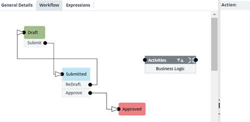
To load the configuration settings at the right side of the page, click the Business Logic item in the design pane area.
The Business Logic propertied are displayed at the right pane of the page.Figure 2.
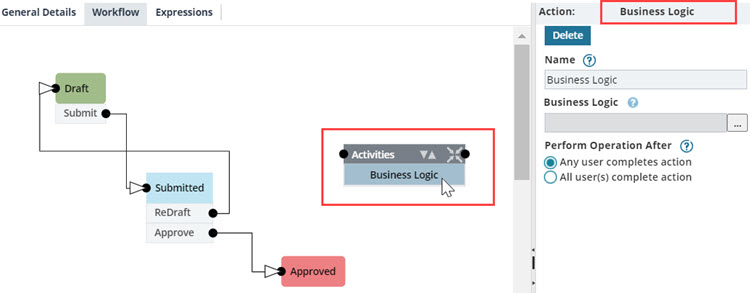
In the Name field, enter a name for the Business Logic item.
To configure the business logic with Blockly interface, perform the following steps:
In the Business Logic field, click .
The Business Logic dialog box is displayed.Figure 3.
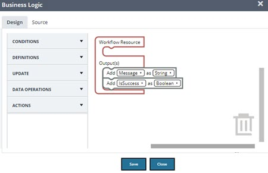
To configure the business logic that must be executed, drag and drop the appropriate blocks to the design area. For information on configuring blocks, refer to Configuring Business Logic in a Form.
The default block Workflow Resource has two default variables.
IsSuccess: It is a flag variable. The default value is True. This helps to validate whether the business logic that is executed is successful or not.
Message: It is a string variable. The default value is with the executed result message.
To read the appropriate data (discussion control data ) from the selected form and store it as a variable, perform the following steps:
Expand the DEFINITIONS block and click the Variables block.
Click Create Variable.
A pop-up message appears to provide the variable name.
In the New variable name field, enter the variable name as QueryResult, and click OK.
Figure 4.
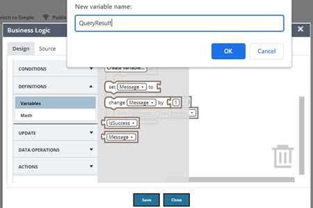
The newly created variable is available in the variable list with the set operator.
Drag and drop the set operator to the design area.
Figure 5.
Expand the DATA OPERATIONS block and click the Read Data block.
The available options of the Read Data block are displayed.Figure 6.
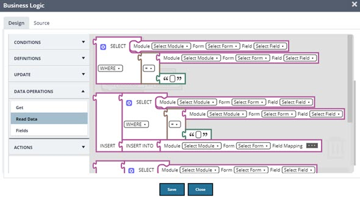
Drag and connect the SELECT block to the set operator.
Figure 7.
Expand the DATA OPERATIONS block and click the Fields block.
The available options of the Fields block are displayed.Figure 8.
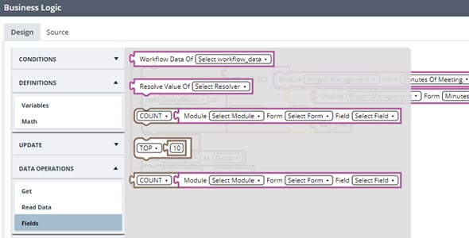
To add the parameter resolver value that must be equivalent for the query execution, drag and connect the Workflow Data Of block to the SELECT block.
Figure 9.
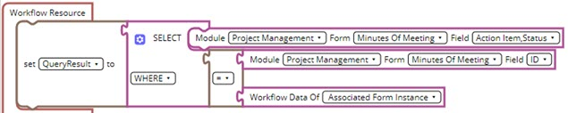
Note:
The SELECT block executes the database query and stores the result in the set operator variable Query Result.
To validate the retrieved information in a loop for each information retrieved, perform the following steps:
Expand the CONDITIONS block and click the Loops block.
Drag and connect the for loop block below the set operator.
Figure 10.
Expand the DEFINITIONS block and click the Variables block.
Drag and connect the Query Result variable to the for loop block.
Figure 11.
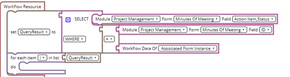
Note:
The for loop block creates a default variable i for the increment of a loop for values passed.
Expand the CONDITIONS block, then expand the Logic block, and click the If block.
Drag and connect the If block to the for loop block.
Figure 12.
Expand the DATA OPERATIONS block and click the Get block.
Drag and connect the Get block to the If Block.
In the Get Property of block, define the values as follows:
From the drop-down list of Select Variable entity, select i.Figure 13.
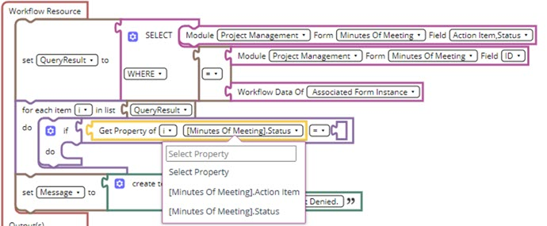
From the drop-down list of Select Property entity, select Status.
From the drop-down list of Operator entity, select ≠.
Expand the UPDATE block, and then click the Text block.
Drag and attach the empty string block to the ≠ operator entity of the Get Property of block and mention the resolver value as Closed.
If the resolver condition fails, to update the variable Is_success to false, drag and connect the set block to the Get Property of block.
Set the value of the variable Message to {Action Item name} is not Closed. Request Denied.
Figure 14.
Click Save.
To validate the Is_Success flag variable of the Business Logic item, drag and drop the Advanced Conditional Block item to the design area.
Figure 15.
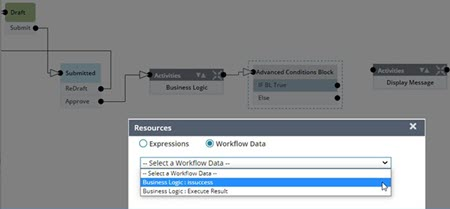
If the condition fails, to display the Business Logic message, perform the following steps:
Drag and drop Display Message item to the design area.
To load the configuration settings at the right side of the page, select the Display Message item in the design pane area.
The Display Message tab is displayed at the right pane of the page.
In the Name field, enter a name for the Display Message item.
To configure the display message logic, click
The Resources dialog box is displayed.Figure 16.
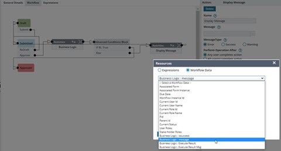
Click the Workflow Data button and from the drop-down list, select Business Logic : message.